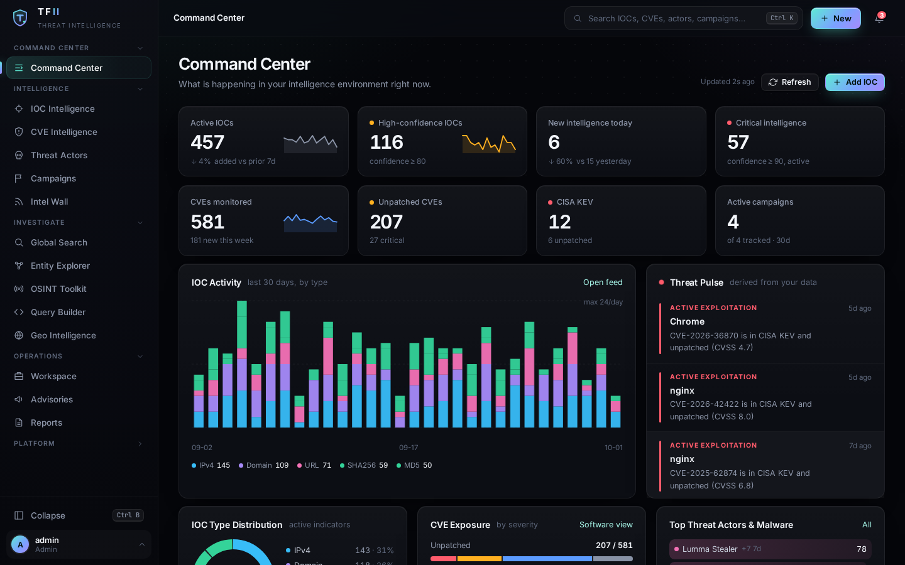
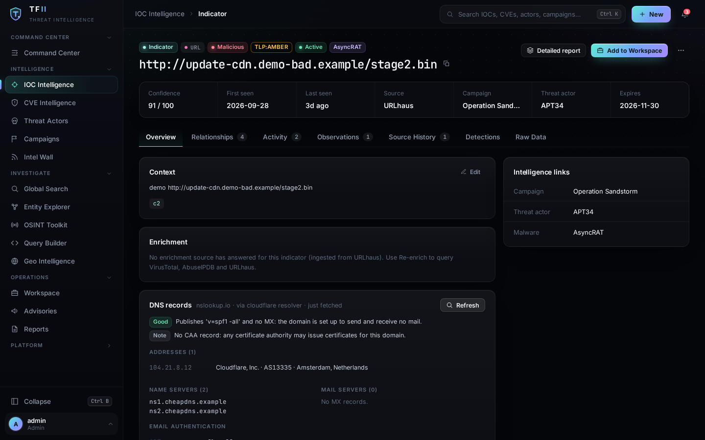
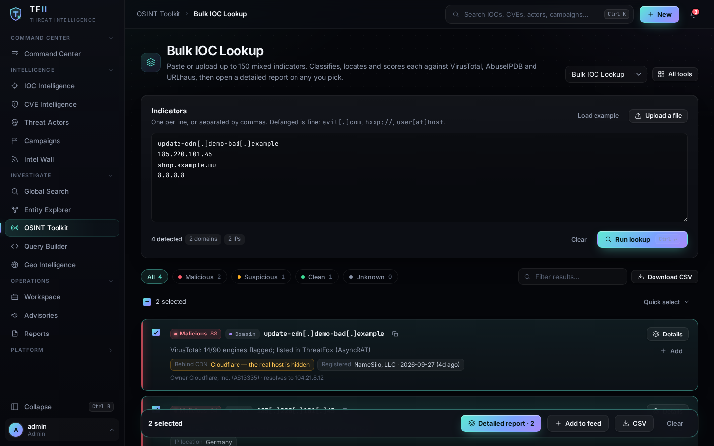
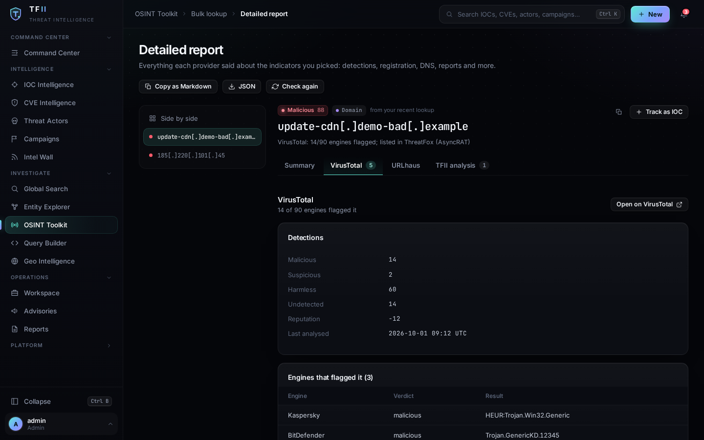
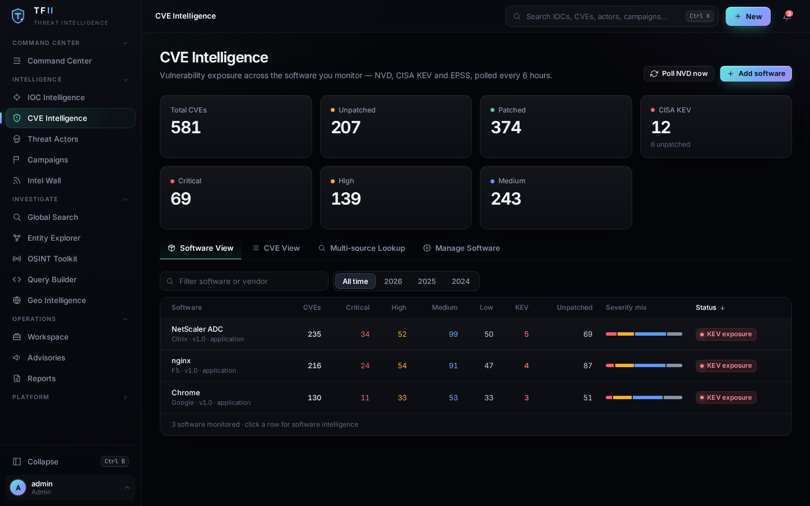

Threat intelligence that shows its work
A free, open-source, self-hosted platform that brings public threat feeds and CVE data into one analyst workspace, and explains why it believes what it says.
git clone https://github.com/sherifrahim/TFII.git && cd TFII ./scripts/docker-setup.sh

Screenshots show seeded demo data.
Feeds tell you what to block. TFII tells you how sure to be.
Public feeds are noisy and easy to misread. TFII keeps the evidence next to every conclusion.
Corroborated confidence
Each source has a reliability. Independent sources add up; an aggregator is never counted twice against the lists it aggregates. Every indicator page shows the reasoning.
Honest location
A domain behind a CDN does not get a country pinned on it. TFII labels each fact: IP location, hosted in, CDN edge node, TLD registry, registrant country, past addresses.
Your keys, isolated
Bring your own API keys. They are encrypted, visible only to their owner, and have a Test button so you know they work before you rely on them.
Nothing phones home
No telemetry, no vendor cloud. Every outbound call is listed in DATA_FLOWS.md.
What's inside
Built for triage and investigation on a small team's budget.
Look at one indicator, see the whole picture
- Reputation with the reasoning behind the score
- VirusTotal, AbuseIPDB and URLhaus enrichment
- DNS records with SPF and DMARC flagged
- Relationship graph, timeline, notes, hunting queries (KQL, SPL, YARA)


Triage a list in minutes
- Paste up to 150 IOCs at once, defanged is fine
- Reputation, network owner and labelled location per row
- Export to CSV, add to an investigation
A detailed report on anything you pick
- Select indicators from a lookup, open one report with a tab per provider
- Detections, engines, registration, DNS, reports and payloads, as each provider returned them
- Copy as Markdown or download JSON

CVEs that matter to your software
- CISA KEV and EPSS alongside NVD severity
- Tracks the products you run and flags exploited ones
- STIX 2.1 export and a TAXII 2.1 server for your other tools

What it is not
So nobody wastes an evening.
- Not a SIEM or EDR: it does not see your network.
- Not a replacement for a paid commercial intelligence service. Public feeds are noisy and scores are a triage aid, not a verdict.
- No independent security audit yet. Run it behind HTTPS and read SECURITY.md.
Run it in about five minutes
Docker with Compose v2 is all you need. The setup script generates your secrets and a one-off admin password.
git clone https://github.com/sherifrahim/TFII.git && cd TFII chmod +x scripts/docker-setup.sh && ./scripts/docker-setup.sh